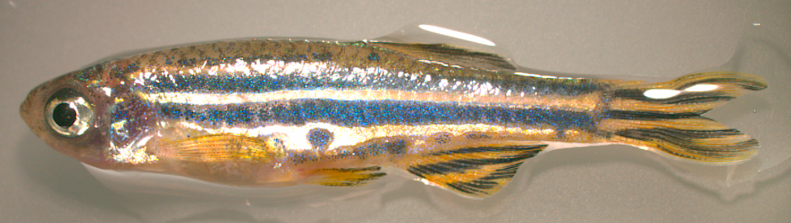

Research
Using zebrafish to study vision
Our lab uses the small zebrafish to understand how the lens of the eye develops, functions, and what happens as it gets older. Why study the lens? As we get older the lens naturally becomes cloudy to produce cataracts, one of the leading causes of blindness worldwide. Gene mutations can also cause early developing congenital cataracts in children. Understanding the causes of cataracts can lead to better prevention.


Another reason to study the eye lens is to explain how it becomes biological glass. The lens is made of living cells, but most of those cells lose their nuclei and other internal structures, or organelles. This means that the cells at the center of our lens, which were produced before our birth, are older than we are, and must function without the ability to repair and replace their components. This is highly unusual, allowing us to explore some fundamental cell biology.
Why zebrafish? Like many fishes, the females release eggs that are fertilized in the water by males. We can collect these fertilized eggs and grow the baby fish (embryos) in petri dishes. Most of the zebrafish’s organs, including the eye, develop in 2-3 days and the embryos are transparent. That allows us to watch lens development in real time in a live animal. The process is similar to what happens in humans, so zebrafish work can be translated to human health.


Many molecular tools, like CRISPR gene editing, allow us to tinker with zebrafish lens development to see how it works. Using this approach we are pursuing the following research questions:
What genes regulate eye lens development?
Previous work from many labs have identified a number of gene required to make a healthy eye lens. Much of this work is done in mammal model species, like the mouse. Here is an excellent review of what is known about the molecular control of lens development. However, there are multiple open questions about lens development and likely many undiscovered controls on the process. We recently worked with our colleague Dylan Farnsworth at the University at Albany to publish the first atlas describing gene expression at the individual cell level during lens development for any vertebrate species. This zebrafish data showed that there are numerous genes that are highly expressed in lens cells with no currently known lens function. We are using CRISPR/Cas9 editing to damage these genes to identify novel mechanisms involved in lens development.

How do the most abundant proteins in the lens work?
The primary job of the lens is to focus incoming light on the retina so that we can produce clear images of our surroundings. Focusing light requires that it be bent, or refracted, much like the light passing through a camera lens. The lens produces this refraction by packing its central fiber cells with large quantities of proteins called lens crystallins. We have used zebrafish to better understand the role that these proteins play during lens development and to compare their function to the same proteins in humans. We have even compared the same lens crystallin protein in animals living in a wide range of temperatures, including the antarctic toothfish, to discover how the protein evolves to function at these temperatures.
It has been hypothesized that lens crystallins may play broader roles than simply producing the density needed for light refraction. We are currently using CRISPR-generated fish lacking two different alpha-crystallins to explore how their loss may impact developmental processes both within the lens and in other parts of the body.
What happens as the lens ages?
Because most of the cells in the lens lack nuclei they are not able to replace proteins as they age. This makes the lens an excellent model for studying protein aging in particular, and molecular aging in general. This aging is the cause of most lens cataracts, the leading cause of human blindness worldwide, and presbyopia, the inability to focus up close as we get older.
Zebrafish typically have a lifespan of 3-5 years in a research laboratory. This means that zebrafish become “middle-aged” by 3 years, allowing us to more quickly study the effects of aging.